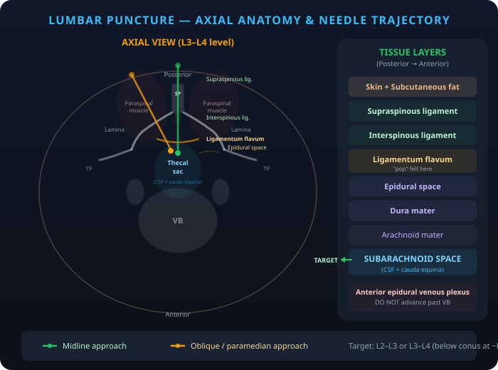
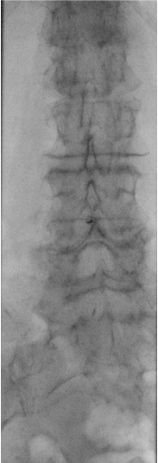
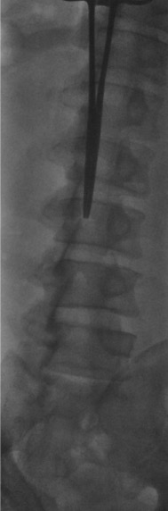
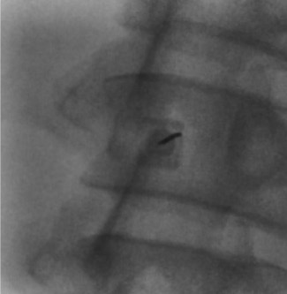

Indications / Contraindications
Indications
- CSF analysis: Cytology, culture, cell count/diff for suspected CNS infection, subarachnoid hemorrhage, or demyelinating disease (oligoclonal bands, IgG index)
- Opening pressure measurement: Diagnosis and monitoring of idiopathic intracranial hypertension (pseudotumor cerebri) and normal pressure hydrocephalus (NPH)
- Intrathecal chemotherapy: Administration of methotrexate, cytarabine, or other agents for CNS lymphoma or leptomeningeal carcinomatosis
- CT myelography: Injection of intrathecal iodinated contrast for spinal canal evaluation when MRI is contraindicated or non-diagnostic
Contraindications
- Absolute: Uncorrected coagulopathy (INR >1.4, platelets <50K) · Elevated intracranial pressure with intracranial mass or obstructive hydrocephalus (herniation risk) · Overlying skin infection or epidural abscess · Low-lying conus, tethered cord, or myelomeningocele at the puncture site
- Relative: Patient unable to cooperate or be positioned · Anticoagulation therapy (hold per SIR guidelines) · Pregnancy (fluoroscopic radiation exposure) · Chiari I malformation (risk of tonsillar herniation with CSF removal)
Pre-Procedure Checklist
Relevant Anatomy
Access Site
- Target interspace: L2–L3 or L3–L4 (below the conus medullaris, which typically terminates at ~L1). Choose the level that appears most unobstructed by osteophytes or degenerative changes on fluoroscopy
- Ideal backstop: Select an interspace where the vertebral body serves as a posterior limit, preventing inadvertent deep needle advancement
- Tissue layers (posterior to anterior): Skin, subcutaneous fat, supraspinous ligament, interspinous ligament, ligamentum flavum (feel for characteristic "pop"), epidural space, dura mater, arachnoid membrane, subarachnoid space (target)
Danger Structures
- Anterior epidural venous plexus: If venous blood is aspirated, the needle is too deep and has passed through the thecal sac — withdraw 1–2 mm
- Cauda equina nerve roots: Floating within the thecal sac below L1; radicular pain on needle contact requires immediate withdrawal and repositioning
- Disc space: Avoid directing the needle through the intervertebral disc, which can allow the needle to extend into the retroperitoneum or introduce disc material into the thecal sac

How I Do It
Default RadCall approach + community cards
Supplies
Steps
Position + fluoro survey



Prep + drape
Local anesthesia
Access
Oblique/paramedian approach: The needle enters lateral to the spinous processes and is directed toward the interlaminar space ("behind the Scotty dog's neck" on oblique fluoroscopy). This avoids the strong midline ligaments and calcified bridging osteophytes in patients with degenerative disease. May be more comfortable for the patient.
CSF collection
Completion
Troubleshooting
Dry tap — no CSF return
Likely cause: Needle off-midline, not deep enough, or interspace obstructed by osteophytes or degenerative changes.
Next step: Confirm needle position with a cross-table lateral fluoroscopic view. Have the patient perform a Valsalva maneuver to increase CSF pressure. Try tilting the table 45 degrees (Trendelenburg), rotating the needle 90 degrees, or advancing 1–2 mm. If truly dry, attempt a different interspace or convert to CT-guided approach.
Bloody tap
Likely cause: Traumatic needle passage through epidural venous plexus, or true subarachnoid hemorrhage.
Next step: Collect serial tubes and check if blood clears (traumatic tap: clears by tube 4) versus persistent blood (SAH: does not clear). If venous blood is encountered, the needle is too deep — withdraw 1–2 mm. Withdraw in 5 mm increments checking for blood at each level. Send tube 4 for xanthochromia if SAH is suspected.
Radicular pain (shooting leg pain)
Likely cause: Needle tip contacting a cauda equina nerve root within the thecal sac.
Next step: Stop immediately and withdraw the needle 1 mm. Pain should resolve within seconds. If radicular symptoms persist, completely withdraw the needle and redirect the approach. Never advance further if the patient reports radicular symptoms.
Parallax artifact on fluoroscopy
Likely cause: Needle hub not aligned directly over the needle tip, creating a false impression of needle position.
Next step: Center the needle on the fluoroscopy screen. Ensure the hub is directly over the tip on the AP view before advancing. Use cross-table lateral to confirm depth. Reposition the C-arm if needed to obtain a true AP projection.
Complications
Immediate
- Post-LP headache (~33%) — positional (worse upright, better supine); most common complication; treat with caffeine, IV fluids, and recumbent positioning; refer for epidural blood patch if persistent beyond 4 days
- Spinal hematoma (rare but devastating) — presents as progressive neurologic deficit, back pain, and cord/cauda equina compression; requires emergent surgical decompression within 12 hours for best outcomes
- Nerve root injury — transient radicular pain from needle contact; persistent deficits are exceedingly rare with proper technique
- Vasovagal reaction — syncope or presyncope during the procedure; keep patient prone and monitor
Delayed
- Epidermoid tumor (rare) — late complication from skin fragment inclusion carried into the thecal sac by the needle; mitigated by always using a stylet during initial needle placement
- Intracranial subdural hematoma (rare) — from persistent CSF leak causing intracranial hypotension and traction on bridging veins; suspect if headache changes character or becomes non-positional
- Meningitis (rare) — iatrogenic infection from break in sterile technique; extremely uncommon with proper aseptic precautions
Post-Procedure Care
Monitoring
- Keep patient recumbent for 30 minutes post-procedure
- Neurologic checks: assess motor strength and sensation in lower extremities
- Monitor for headache onset, back pain, or new neurologic symptoms
- Document opening pressure, closing pressure, total volume removed, and CSF appearance
- Restrict strenuous activity for 24 hours
- Advise the patient to avoid alcohol (dehydration can worsen post-LP headache)
Post-LP Headache Management
- Incidence: ~33% of patients; the most common complication of lumbar puncture
- Character: Positional headache that worsens when upright and improves when supine, typically frontal or occipital
- First-line treatment: Oral or IV caffeine (300–500 mg), aggressive hydration, bed rest, and analgesics
- Epidural blood patch: Definitive treatment if headache persists beyond 4 days; ~90% effective with a single patch
- Key point: Post-LP headache is NOT correlated with the volume of CSF removed — it results from ongoing CSF leak through the dural puncture site
Critical Pearls
CSF Analysis Reference
| Parameter | Normal Value | Clinical Significance |
|---|---|---|
| Opening pressure | 6–20 cm H2O (up to 25 in obese) | >25 cm H2O suggests IIH; <6 may indicate CSF leak or dehydration |
| Appearance | Clear, colorless | Cloudy = infection; Bloody = traumatic tap or SAH; Xanthochromic (yellow) = old blood/elevated protein |
| WBC count | <5 cells/μL | Elevated in meningitis, encephalitis, CNS malignancy, SAH |
| RBC count | 0 cells/μL | Present in traumatic tap (clears tube 1 to 4) or SAH (does not clear) |
| Protein | 15–45 mg/dL | Elevated in infection, Guillain-Barré, malignancy, MS; very high (>500) in bacterial meningitis |
| Glucose | 60% of serum glucose (~50–80 mg/dL) | Low in bacterial/TB/fungal meningitis, malignancy; normal in viral meningitis |
| Gram stain / culture | No organisms | Positive in bacterial meningitis; culture is the gold standard for organism identification |
| Cytology | No malignant cells | Positive in leptomeningeal carcinomatosis, CNS lymphoma; sensitivity improves with volume (>10 mL) |
| Oligoclonal bands | Absent (or matched in serum) | Present in >90% of MS patients; also seen in neurosarcoidosis, CNS infection |
| Xanthochromia | Absent | Present 2–12 hours after SAH; distinguishes true SAH from traumatic tap; send tube 4 in a light-protected container |